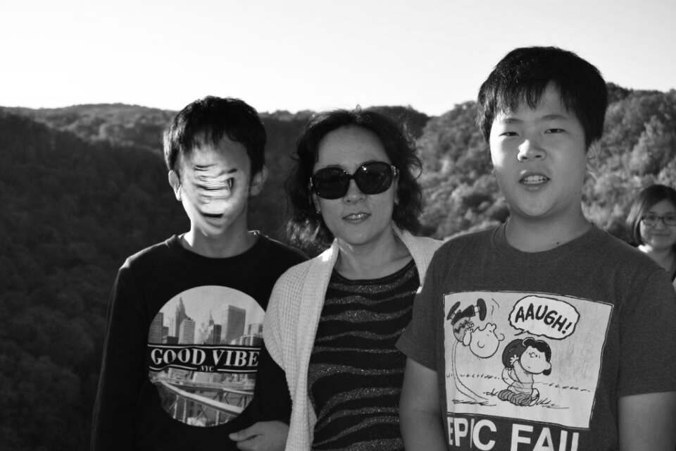
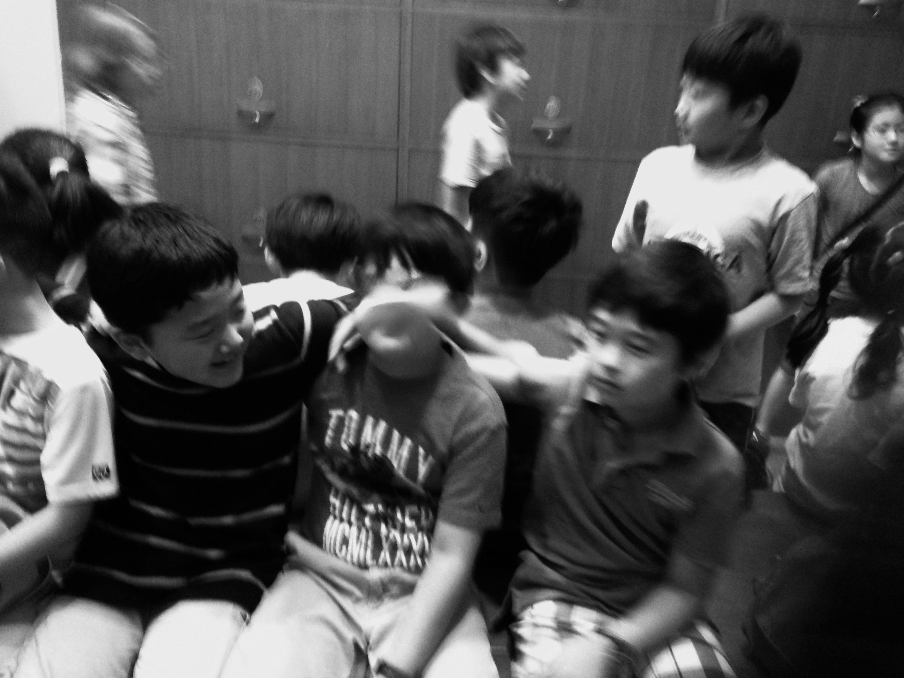
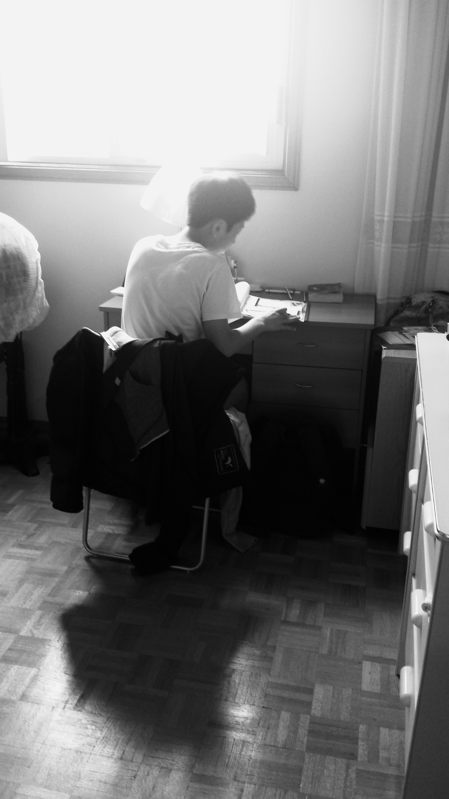

American Dream



The United States is often praised as the “land of freedom,” where individual rights and democratic values are protected by law. Its diversity allows immigrants from all over the world to find that reflect their own cultures while also engaging with new perspectives. The U.S. economy, as one of the largest and most dynamic in the world, offers opportunities for innovation, entrepreneurship, and upward mobility. For many, the country represents the possibility of building a better life through education, career advancement, and personal independence. The American Dream, though complex, continues to serve as a symbol of hope and aspiration for millions.
Beneath this idealized image, however, lie serious challenges. Economic inequality is widespread, making it difficult for many immigrants and citizens alike to achieve stability. Social divisions based on race, class, and immigration status often lead to discrimination and systemic barriers. Healthcare and education, while advanced, are costly and can deepen financial burdens, especially for newcomers. Many immigrants also experience cultural isolation, alienation, and pressure to assimilate, which creates psychological strain. Thus, while America offers freedom and opportunity, it also presents hidden struggles that reveal the gap between promise and reality.
My father had always hungered for education. Perhaps it was the lack of it in his own youth, or the boundaries he could never cross. He wanted us to see a larger world. That was why my parents chose America. He remained in Korea. I left with my mother, my twin brother, and my sister. The first days were harsh. My twin and I did not know the alphabet. We had not chosen this journey; we had only been carried across an ocean. My sister seemed to belong to my father’s vision. It was she who had first spoken of study abroad. She adapted, or at least looked as if she did. At school I was afraid. I felt abandoned in a wilderness where no language answered me. Only my brother stood close. Our teacher was known for her bitterness. She was old, impatient, and her anger fell easily. She made a girl, who barely spoke Korean, translate for us. I still remember her troubled face. At lunch, our food became a spectacle. The others laughed without knowing the weight of their words. My mother heard, and her anger stayed inside her. In a foreign land, she could not raise her voice. Still, she went to the school. The next year we were placed in a Korean class. For a moment, we could breathe. But relief was short. The others studied with a fire we could not follow. We went to lessons each evening until night. We were only in the third grade. Fatigue spread through us. My mother decided to leave. She chose Canada, the country called peaceful. Our years in America ended like that—suddenly, and yet with the feeling that they had lasted forever.
← back